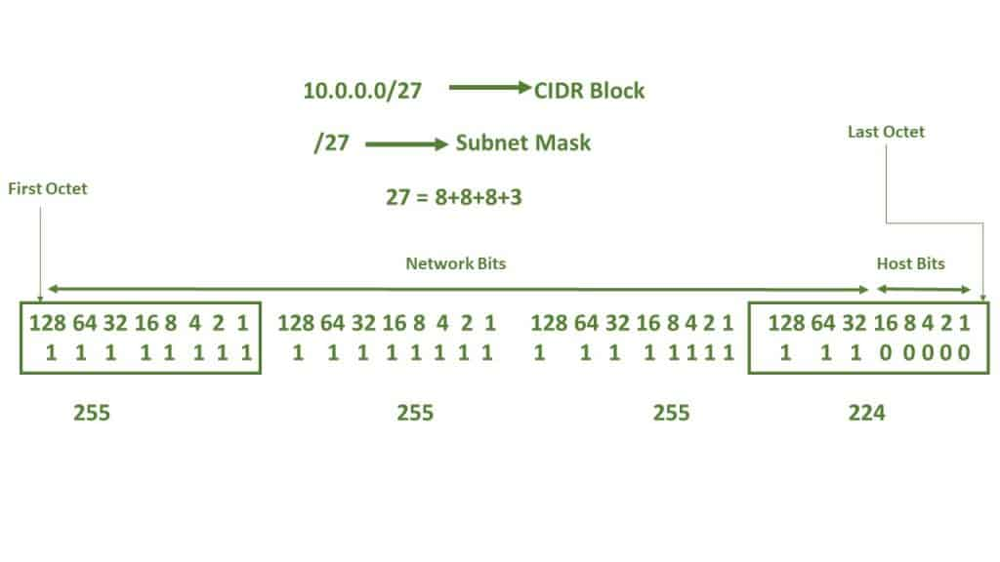

🔢 Subnetting-Trainer
Berechne zu einer zufälligen IP-Adresse mit CIDR-Notation die Netzadresse, die Broadcast-Adresse, die Anzahl nutzbarer Hosts und die Netzadresse des nächsten Subnetzes gleicher Grösse.
📺 Vertiefung: Subnetting einfach erklärt! (Florian Dalwigk)
Kurz erklärt
i
Eine IP-Adresse mit CIDR (z.B. /24) teilt sich in zwei Teile: einen
Netz-Teil (identisch für alle Geräte im selben Subnetz) und
einen Host-Teil (unterscheidet die Geräte darin). Die Maske
markiert, wie viele Bits von links zum Netz-Teil gehören.
i
- Netzadresse: IP-Adresse UND (bitweise) mit der Subnetzmaske.
- Broadcast-Adresse: Netzadresse ODER mit der invertierten Maske (Wildcard).
- Nutzbare Hosts: 2^(32−CIDR) − 2 (Netz- und Broadcast-Adresse abgezogen). Bei /31 und /32 gibt es keine "klassischen" nutzbaren Hosts.
- Nächstes Subnetz: Netzadresse + Grösse des Subnetzes (2^(32−CIDR)).
Die Subnetzmaske Bit für Bit (Beispiel /27)
Jede der 32 Bit-Stellen einer Maske ist entweder 1 (gehört zum
Netz-Teil) oder 0 (gehört zum Host-Teil) - die CIDR-Zahl gibt einfach
an, wie viele 1en von links gezählt werden, bevor die 0en beginnen.
Bei 10.0.0.0/27 liegen die letzten 5 Bit im
vierten Oktett auf 0, das ergibt die Maske 255.255.255.224:

Von den 32 Bit sind bei /27 die ersten 27 (drei ganze Oktette plus die ersten 3 Bit des letzten Oktetts, türkis markiert) der Netz-Teil - die restlichen 5 Bit (0 0 0 0 0) sind der Host-Teil und ergeben 25 = 32 Adressen pro Subnetz (30 nutzbar).